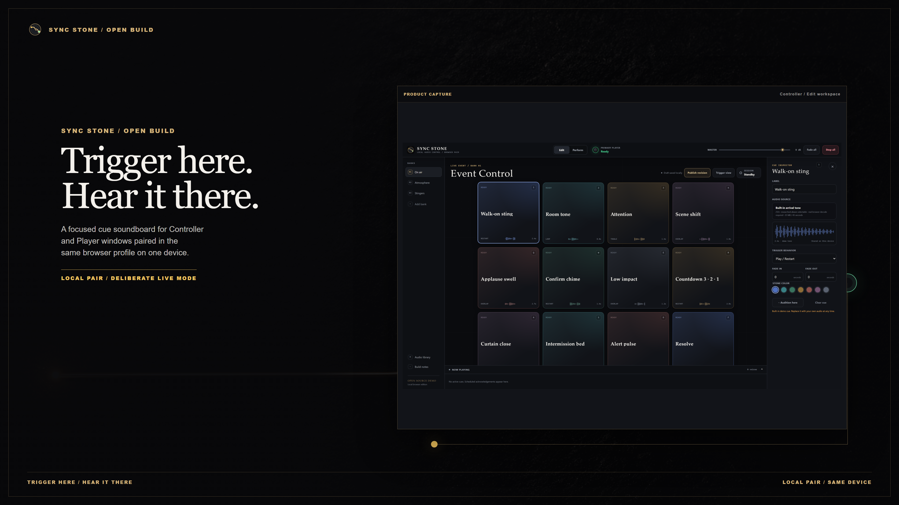

MAYOWA-007 / PUBLIC RELEASE
Launch material,
cut from the product.
Original-resolution feature cards, carousels, channel art, social crops, and product sheets for Sync Stone. Every interface shown is an authentic product capture.
- 41
- assets
- 4K
- masters
- SHA-256
- verified

THE HONEST SIGNAL PATH
Controller and Player pair in the same browser profile on one device. Audio stays local. The chooser recognizes 254 researched extension aliases; playback still depends on the browser's decoder.
CAMPAIGN OUTPUT
Pick a surface. Take the master.
Loading verified asset manifest...